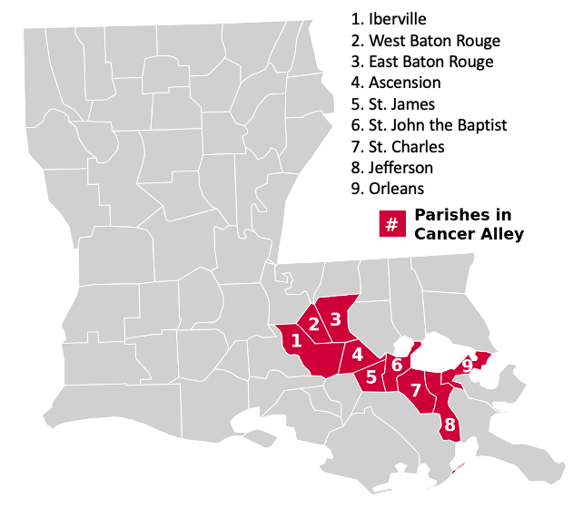

library(readr)
la_mort <-
read_csv("https://www.dropbox.com/scl/fi/fzsnhfd3lq80v2o3sag6c/la_mort.csv?rlkey=h1vyjm2b8ppgejgsg3e8evm7i&dl=1")Data Wrangling Tutorial - Louisiana Mortality File
Analyic Sample Construction
In this tutorial, we’ll construct an analytic sample from the Louisiana Mortality file so that we can analyze cancer mortality rates in Cancer Alley parishes.
Before beginning the tutorial, open the RStudio project file (.Rproj) you saved for the previous tutorial (this is the project that you used when you created your “Louisiana Mortality Data Description” Markdown document). Note that this project file is already linked to your hpam7660_Cancer_Alley GitHub repo. From now on, we’ll save all work related to the Cancer Alley scenario to this same GitHub repo.
Next, open a new Markdown document and give it a YAML header that includes the title “Louisiana Mortality Analytic Sample”, your name, the date, and “pdf_document” as the output format.
Loading the Louisiana Mortality Files
Just like we did in the previous tutorial, you’ll want to first load the Louisiana Mortality File. Include the following R code in your Markdown document.
Defining Cancer Alley Parishes

Cancer Alley is typically defined as an 85-mile stretch along the Mississippi river where a high concentration of petrochemical plants are located. These plants are known to emit toxic chemicals, including ethylene oxide, which is a proven carcinogen. The parishes comprising Cancer Alley include: Ascension, East Baton Rouge, Iberville, Jefferson, Orleans, St. Charles, St. James, St. John the Baptist, and West Baton Rouge.
To determine whether cancer mortality tends to be elevated in Cancer Alley parishes, we first need to define a new variable that identifies Cancer Alley parishes. We can create this identifier using the following R code:
la_mort$cancer_parish <- ifelse(la_mort$cntyrsd %in% c(5, 33, 47, 51, 71, 89, 93, 95, 121), 1, 0)Here we’re telling R to create a new variable in the la_mort data set called cancer_parish. The way to read the code on the right hand side of the <- symbol is as follows: “If county of residence was equal to 5, 33, 47, 51, 71, 89, 93, 95, or 121, the cancer_parish variable should take the value of 1, otherwise the cancer_parish variable should take the value of 0.”
You’re probably wondering what the numbers 5, 33, 47, 51, 71, 89, 93, 95, and 121 mean. These are county FIPS codes. Each county in the U.S. is given a unique code. In our case, these codes represent the following parishes:
- 5 - Ascension
- 33 - East Baton Rouge
- 47 - Iberville
- 51 - Jefferson
- 71 - Orleans
- 89 - St. Charles
- 93 - St. James
- 95 - St. John the Baptist
- 121 - West Baton Rouge
Let’s check the new variable we created to make sure that it defines the correct parishes as belonging to Cancer Alley. We can use the following R code to double check our work:
table(la_mort$cancer_parish)
table(la_mort$cntyrsd[la_mort$cancer_parish == 1])The first table command shows us that our new cancer_parish variable has 445,138 rows where the value is equal to 0 and 197,558 rows where the value is equal to 1. That means that, of the 642,696 rows (i.e., deaths) in our data, a little more than 30% represent people who lived in a Cancer Alley parish.
The second table command shows us the parish FIPS code values that correspond to a cancer_parish value of 1. We can see that the parish values exactly match the FIPS codes for Cancer Alley parishes, so our code worked as intended. Had we mistyped a parish FIPS code in our ifelse command, we would see the mistake here and could correct it.
Identifying Cancer Deaths
Now that we have created a variable to categorize Cancer Alley parishes, we need to identify which deaths in the Louisiana Mortality File were due to cancer. As you know from the previous tutorial, the death certificate data contain four levels of “cause of death” codes. The most granular level is the ucod variable, which includes ICD 10 codes. The ucr358 variable aggregates these ICD 10 codes into 358 separate cause of death categories. Similarly, the ucr113 and ucr39 variables aggregate the ICD 10 codes into 113 and 39 separate cause of death categories, respectively.
Let’s start with the most aggregate level of cause of death codes and work our way down from there to see whether it matters which categorization scheme we use. Similar to what we did with Cancer Alley parishes, we want to create a variable that identifies cancer deaths using the ucr39 variable. Here’s the R code we can use to do that:
la_mort$cancer39 <- ifelse(la_mort$ucr39 %in% c(5, 6, 7, 8, 9, 10, 11, 12, 13, 14, 15), 1, 0)Run the following table command to see how many cancer deaths are included in the data when we define a cancer death using the ucr39 variable:
table(la_mort$cancer39)You should see that, according to the ucr39 classification, 138,677 people in the data died from cancer and 504,019 died from non-cancer causes.
One thing to notice about the c() vector in our ifelse command is that the numbers corresponding to cancer deaths are sequential - that is they go from 5 to 15 in units of 1. Because of this, we could express our ifelse statement more succinctly as follows:
la_mort$cancer39 <- ifelse(la_mort$ucr39 %in% c(5:15), 1, 0)This will give us the exact same result as the previous command, but allows us to avoid typing all the individual cause of death numbers.
Now see what happens if you use the ucr113 variable to define cancer deaths. Create a variable called cancer113 that uses the ucr113 variable and codes 19 through 44 to define cancer deaths. Do you get the same number of cancer deaths that you did when using ucr39?
Spoiler: you do not. Let’s investigate the discrepancy in the coding. First, we know that we have 141,747 cancer deaths when we use ucr113 and 138,677 cancer deaths when we use ucr39. That means that 3,070 people who were coded as having died of cancer in the ucr113 variable were coded as dying of some other cause in the ucr39 variable. Let’s see what those causes are:
table(la_mort$ucr39[la_mort$cancer113 == 1 & la_mort$cancer39 == 0])Turns out all 3,070 people were coded as dying from “all other disease” in the ucr39 variable. We can dig a little deeper by examining the ICD 10 codes for these 3,070 people. Run the following R code:
table(la_mort$ucod[la_mort$cancer113 == 1 & la_mort$cancer39 == 0])This shows us that all 3,070 people had an ICD 10 cause of death code between D000 and D489. According to the data description, these ICD 10 codes correspond to a category called “in situ neoplasms, benign neoplasms and neoplasms of uncertain or unknown behavior”. Now we can see what’s happening: in situ neoplasms and benign neoplasms are not malignant neoplasms, so these causes of death were not included in our list of cancers when we used ucr39 codes. It’s not all that clear whether we should consider “in situ neoplasms, benign neoplasms and neoplasms of uncertain or unknown behavior” to be deaths caused by cancer. To be conservative, let’s exclude those deaths from our cancer113 variable. You’ll need to recreate the cancer113 variable and exclude code 44. Once you do that, you should find that you get the same number of cancer deaths, 138,677 whether you use ucr39 or ucr113.
We’ll skip replicating this exercise using the ucr358 variable, but if you try it on your own, you should find that it also gives you 138,677 deaths attributable to malignant cancers.
Aggregating to the Parish Level
Now that we’ve identified cancer deaths, we’ll want to use this information to build annual parish-specific cancer mortality rates. As the word “rate” implies, we’re going to need to create both a numerator and a denominator. Our numerator should be the count of cancer deaths in each parish by year and our denominator should be parish population. We’ll bring in population measures in the next step, but first, let’s aggregate cancer death counts by parish and year, and that we want to ignore cases where cancer39 is missing (though there shouldn’t be any rows where cancer39 is missing, we’ll still add this option as a precaution).
library(dplyr)
parish_count <- la_mort %>%
group_by(cntyrsd, cancer_parish, year) %>%
summarize(cancer39 = sum(cancer39, na.rm = TRUE))It’s worth taking a minute to clearly explain what’s going on here. First, we’re loading the dplyr library because we want to use the group_by command and that command is part of the dplyr package. Next, we’re creating a new data frame called parish_count that is going to be a transformation of the la_mort data frame that we’ve been working with. The last two lines of this code tell R that we want to calculate the sum of the cancer39 variable by parish (cntyrsd), cancer alley parishes (cancer_parish), and year.
We can get a sense of what this data aggregation looks like by using the summary command (note that summarize and summary are two different commands):
summary(parish_count$cancer39)The results of the summary command tell us that, on average, there were 144.5 cancer deaths per parish per year. The parish-year grouping with the fewest cancer deaths had 3 deaths and the parish-year grouping with the most cancer deaths had 992 cancer deaths.
We can also take a more complete look at our aggregate data frame by using the View(parish_count) command. Remember that Markdown doesn’t like the View() command, so you’ll want to type this command into the Console Window command line instead of including it in your Markdown document.
Merging Population Data
As you know, we have a very rough measure of parish population in the mortality file, but it doesn’t provide the level of precision we need to calculate accurate cancer mortality rates. So we’re going to have to bring in parish-level population data from another source.
First you’ll need to download a data file that contains county population estimates for Louisiana. I’ve created this file using data from the Census. If you’re interested, you can find the raw data here. Otherwise, you can download the file you’ll need for this project by using the code below.
la_pop <-
read_csv("https://www.dropbox.com/scl/fi/650k1obpczky6bwa19ex6/la_county_pop.csv?rlkey=0aokd9m76q7mxwus97uslsx7g&dl=1")One you read this file into R, you’ll see that there are 24,320 rows and 23 columns. Some of the column names should be displayed in the notes that follow the read_csv command. We’ll go over this population file in more detail in a later class, but you can get some sense of the contents from the column names.
Now we’ll need to use the join command to merge the population data from the la_pop data frame to the parish_count data frame. However, before we can do that, there’s an important modification that we’ll need to make to our data frames. In order to join two different data frames, we need at least one common variable between the data frames. These common variables are called “key variables”. In this case, we’ll have two key variables: county and year. There’s just one problem here - while the year variable has the same name in both the parish_count and la_pop data frames, the county variable does not. In the parish_count data frame, the variable that identifies county is called cntyrsd, while in the la_pop data frame, the variable that identifies county is called county. Let’s change the name of the cntyrsd variable in the parish_count data frame to county so that the key variable names are consistent across the two data frames:
parish_count <- parish_count %>%
rename(county = cntyrsd)You can double check to make sure that the rename command actually worked by typing either parish_count or glimpse(parish_count) into the Console Window command line.
Now that we’ve taken care of the variable name issue, we can join the two data frames:
la_joined <- parish_count %>%
inner_join(la_pop, by = c("county", "year"))You’ll get more practice with joins and key variables in your next homework assignment, but a quick explanation of what is happening here is that R is merging the columns from the parish_count and la_pop data frames into a single data frame called la_joined. The common columns linking the two data frames are the county and year columns. We use the command inner_join because we only want to keep counties and years that are present in both data frames (e.g., the la_pop data frame contains population estimates for 2020, but we only have data through 2019 in the parish_count data frame). This page provides a nice description of the different types of joins and very helpful picture.
Note that there is a way to use key variables with different names that avoids the renaming step (you’ll see an example of this in ModernDive chapter 3.7.2), but that can get confusing. For the sake of this tutorial, renaming the key variables so that they share the same names in both data frames is more straightforward.
Take a look at the new la_joined data frame by typing View(la_joined) in the Console Window command line. You should see that the columns from both the parish_count and la_pop data frames are now combined into this new data frame.
Calculating Cancer Mortality Rates
Now that we have a data frame that contains our numerator (cancer deaths by parish and year) and our denominator (parish population by year), we can calculate parish-specific cancer mortality rates. However, one last data modification is required before we do so. If you take a look at either the la_joined or la_pop data frames, you’ll notice that we have population estimates for several different age groups. We’ll calculate age-adjusted cancer mortality rates in an upcoming tutorial. For now, we’ll just calculate crude cancer mortality rates using the entire parish population. Practically, this means we’ll want to delete rows where the agegrp variable is not equal to “all” (you can type table(la_joined$agegrp) to see the different values of the agegrp variable). We’ve seen a couple of different ways to do this in our tutorials and homework assignments. You could use either of the two options below to achieve the same result:
la_joined_all <- subset(la_joined, agegrp == "all")OR
la_joined_all <- la_joined %>%
filter(agegrp == "all")You can double check to make sure the la_joined_all data frame contains only rows where agegrp is equal to “all” by typing table(la_joined_all$agegrp).
Now it’s pretty easy to calculate parish-level cancer mortality rates by year. We’ll just create a new variable called cancer_rate_total that is the ratio of cancer deaths (cancer39) to population (tot_pop) in each parish in each year.
la_joined_all$cancer_rate_total <- (la_joined_all$cancer39) / (la_joined_all$tot_pop)Let’s use the summary command to take a look at this new variable.
summary(la_joined_all$cancer_rate_total)You’ll see that these numbers are very small! It’s common to calculate cancer mortality rates as deaths per 100,000 population. Let’s modify our cancer_rate_total variable so that it represents cancer deaths per 100,000 parish population.
la_joined_all$cancer_rate_total <- ((la_joined_all$cancer39) / (la_joined_all$tot_pop / 100000))If you run the summary command again, you’ll see that the cancer mortality rates we’ve calculated are the same as before, but we’ve moved the decimal place to make the numbers easier to interpret.
Finally, let’s create a simple table of parish-level cancer mortality rates for 2019. We can use the subset and kable commands to create the table as follows:
parish_cancer_2019 <- subset(la_joined_all, year == 2019)
library(knitr)
kable(parish_cancer_2019[, c("county", "cancer_rate_total")])This doesn’t quite get us to where we want to be yet (i.e., comparing cancer mortality rates for Cancer Alley parishes to the rest of Louisiana), but we now have an analytic data set that we can use to get there.
Be sure to save your Markdown file and push the file to your hpam7660_Cancer_Alley GitHub repo.